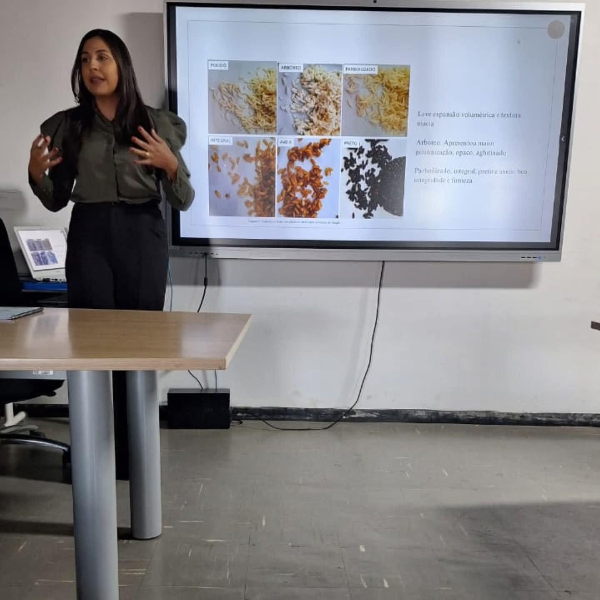

Planejamento de refeições personalizado, prático e adaptado à sua rotina e preferências alimentares.
Consultas regulares focadas na evolução das suas metas, reeducação alimentar e suporte contínuo.
Estratégias nutricionais individualizadas para emagrecimento, hipertrofia ou controle de restrições clínicas.

Além de mulher e mãe de dois filhos, nunca me dei por vencida. Sempre correndo atrás dos meus objetivos e da minha realização profissional, conquistei minha primeira graduação em Estética e Cosmetologia. No entanto, foi na minha segunda graduação que encontrei meu verdadeiro propósito: a Nutrição.
Mesmo enfrentando muitas dificuldades, exercendo em paralelo o trabalho fora e os afazeres de casa, mantive o foco. Hoje, tenho a honra de colher os frutos de fazer parte do setor da nutrição — uma área onde eu já carregava uma expertise natural dentro de casa. Nas comemorações dos meus filhos, os bolos e doces que eu preparava com tanto carinho sempre faziam com que todos prestassem reverência e elogios de admiração. Agora, chegou o momento de colher tudo o que foi plantado com tanto esforço.
"O acompanhamento com a Isadora mudou minha relação com a comida. O cardápio personalizado é super simples de seguir e encaixou perfeitamente na minha rotina corrida!"
— Mariana S."Excelente profissional! A dieta que ela montou respeitou meus gostos e os resultados na minha disposição e estética foram incríveis em poucas semanas."
— Carlos R.Clique abaixo e inicie seu acompanhamento nutricional personalizado agora mesmo.
Iniciar Acompanhamento pelo WhatsApp